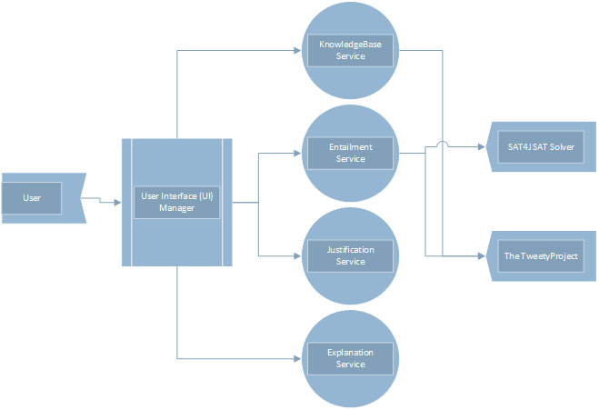
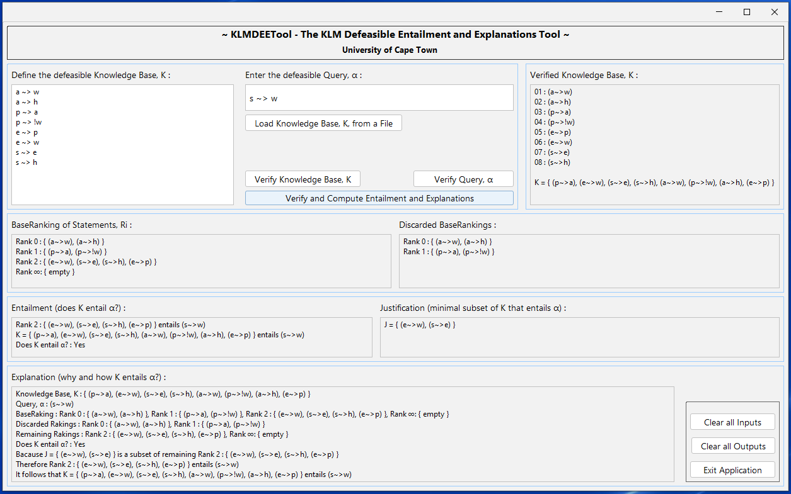

We provide a software system tool with both a graphical user interface and a command line interface that implements algorithms for both classical and defeasible entailment and explanations with outputs in user-friendly language. We conceive of this tool being employed as a debugging service aimed at addressing intricacies or issues within knowledge bases.
KLMDEETool
The KLMDEETool is developed in Java, an object-oriented programming language, and is structured around a well-defined architecture that adheres to the Multi-tier Architecture pattern of software engineering. It consists of several interconnected components that work together to facilitate the processing and analysis of defeasible reasoning scenarios. The architecture is designed to ensure efficiency, modularity, and ease of use as shown in the figure below: 
At its core, the system encompasses the UI Manager responsible for providing a unified user interface for all the functionality KLMDEETool offers. This user interface tier or component offers both a command line interface (CLI) and a graphical user interface (GUI) for user interaction. The CLI allows users to specify the inputs as parameters on the command line while the GUI provides a user-friendly interface for input and result visualisation.
Both of these interfaces consume and provide the same functionality but only differ in presentation and the verbosity of the debug and information outputs. The user interface manager interacts with various modules and services for different functionalities, such as the entailment service, justification service, explanation service and the knowledgebase service, responsible for storing and managing the defeasible knowledge base related data. These services in turn communicate with 3rd party libraries and tools to effect the desired action and result. 